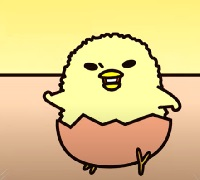

Gudetama
La sèrie de Gudetama és una encantadora aventura televisiva protagonitzada per l'adorable ou perezosa.
Amb una animació captivadora i un estil únic, aquesta sèrie ens porta al món especial de Gudetama,
on la comoditat i la tranquil·litat són les màximes prioritats. A través d'emocionants i divertides situacions,
seguim les traves de Gudetama mentre intenta superar la seva pereza característica. Amb personatges encantadors i lliçons
importants sobre l'acceptació i la felicitat en els moments més senzills, la sèrie de Gudetama ens convida a riure,
relaxar-nos i gaudir d'aquest univers perezós i meravellós.
Una experiència televisiva que captura els cors del públic i ens recorda la importància de prendre's un temps
per gaudir de les coses simples de la vida.
Personatges
Gudetama
Gudetama és una adoradora ou amb una actitud extremadament perezepla.
Aquest personatge originari del Japó és conegut per la seva apatia,
falta de motivació i tendència a estar sempre adormit.
Amb la seva forma de dibuix senzilla i la seva expressió facial desganada,
Gudetama ha captivat els cors dels fans de tot el món.
És considerat com un símbol de relaxació i una font d'alegria
per a molts, i el seu estil únic i encantador el distingeix de la resta.
Amb Gudetama, la pereza mai ha estat tan adorable!
Shakipiyo

Shakipiyo és un dels personatges secundaris fascinants de la sèrie de Gudetama.
Aquesta adorable criatura és un pollastre petit i juganer que acompanya Gudetama
en les seves aventures perezoses. Amb el seu aspecte suau i el somriure sempre present,
Shakipiyo és una font constant de diversió i alegria. A través de les seves
interaccions amb Gudetama, ens mostra l'amistat i la complicitat que uneixen aquests
dos personatges tan diferents. Shakipiyo aporta un toc d'energia i animació
a l'univers de Gudetama i ens recorda la importància de l'amistat i de trobar
la felicitat en les petites coses. Amb la seva personalitat enèrgica i el seu estil únic,
Shakipiyo és un personatge adorat per a tots els fans de Gudetama.
Ou dur (Hard-Boiled)
L'ou dur (japonès: ハードボイルド) es cuina tal com el seu nom indica,
després de bullir en aigua calenta durant més de 15 minuts.
Es representa com a desencantat i, a vegades, amenaçador, amb la frase recurrent "Et cremaràs!".
La seva cara té un aspecte més semblant a un adult madur amb unes cella gruixuda.
Gyudechama
Gyudechama (japonès: ぎゅでちゃま) és completament diferent de Gudetama malgrat ser tots dos rovells.
Té una forma gairebé idèntica a Gudetama, però està pintat amb un groc més clar i té galtes rosades.
La seva cara té un aspecte tradicionalment bonic al més pur estil de Sanrio, que dóna una sensació
d'energia i positivitat cap al món. Comparat amb Gudetama, sembla ser més com un nen sense preocupacions
,mentre que Gudetama és més semblant als adults d'aquesta generació. No obstant això, sovint es mostra
que Gyudechama és simplement Gudetama esforçant-se per semblar animat per aconseguir salsa de soja, abans
de quedar-se sense energia i tornar a la seva forma perezosa i deprimida.
Nisetama-San
Nisetama (japonès: ニセたま, "Ou fals") no és un ou, és una persona misteriosa amb una cara prima i el cos
cobert amb roba de color taronja. És bo en moviments com la dansa contemporània i també ha realitzat una
dansa temàtica de Gudetama. En contrast, és molt alegre i sempre anima Gudetama a pensar de forma positiva
sobre la seva vida.